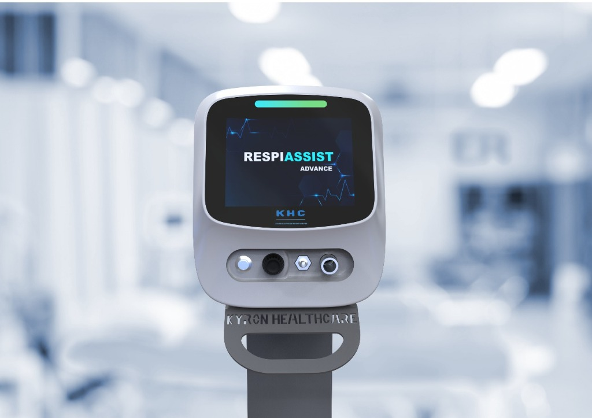

RespiAssist Advance
Advanced NIV platform with enhanced monitoring, precision, and therapy modes.

Key Features
- • Larger interactive display
- • Advanced therapy modes
- • Real-time flow, pressure & FiO₂ monitoring
- • Designed for complex NICU scenarios
Technical Specifications
| Display |
8-inch touch + rotating knob |
| Therapy Modes |
nCPAP, Bubble CPAP, HFNC/O₂
|
| FiO₂ Range |
21 – 100 % |
| Flow Range |
4 – 60 LPM |
| Monitoring |
Flow, Pressure, FiO₂ (real-time)
|
| Battery Backup |
Up to 4 hours |
Back to Products